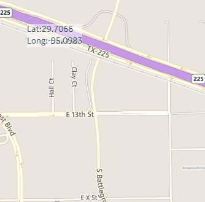
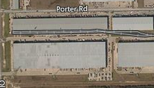
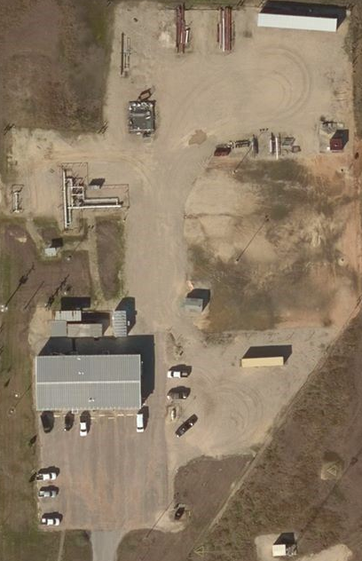
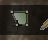
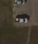
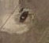

from sikuli import * import os import sys import module_CommonImagesSet def createPolygonInTexas(): if not module_CommonImagesSet.waitForForgeActivation(): return; # go to somewhere near Texas. module_CommonImagesSet.goToLocation("{29.693109, -95.085302}") # zoom level got changed, resetting so that can continue with existing script. minusZoom = find(module_CommonImagesSet.mapTypeRoadImage).getTarget().offset(34, 179) for step in range(3): wait(0.2) click(minusZoom) # zoom level set to old now continue. Region(0,113,1259,897).wait(Pattern().similar(0.51), 20) module_CommonImagesSet.switchToArialView() wait(, 10) click() plusZoomLocation = find(Pattern().similar(0.86)).getTarget() for step in range(4): wait(0.2) click(plusZoomLocation) #wait for the lot to be visible. Sometimes Bing takes a while to load clear picture. wait(Pattern().similar(0.90).targetOffset(1,0), 30) # Draw Polygon on given points. click() click() click() click() click() click() click() click() type(Key.ESC) #createPolygonInTexas()